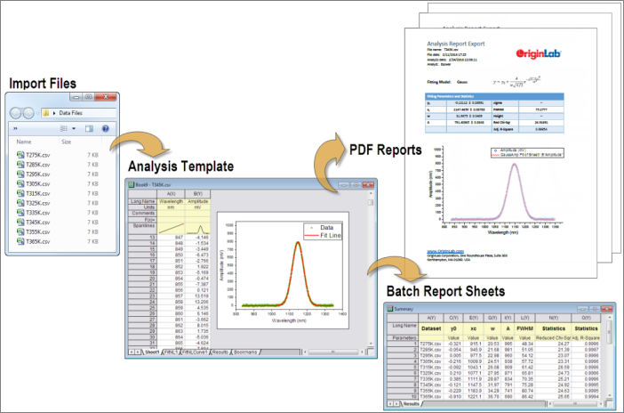
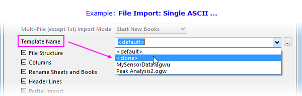
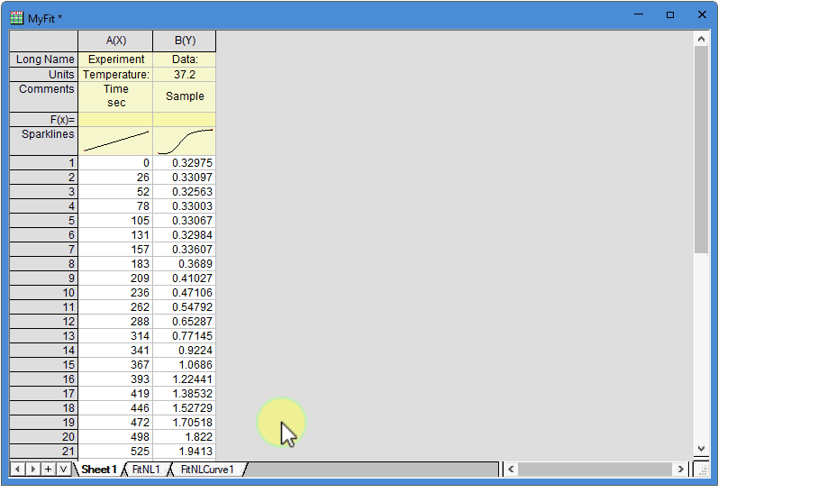
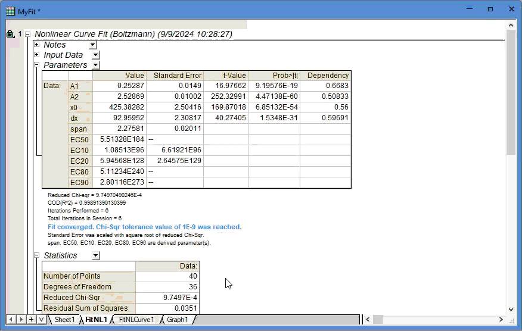
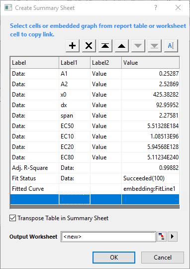
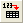

Analysevorlagen
Analysis-Templates
Einführung
Die Origin-Arbeitsmappe kann Rohdaten, Metadaten, mathematische Formeln, Skripte und Analyseergebnisse (einschließlich Diagrammen und Matrix) speichern. Kombinieren Sie diese Möglichkeit, komplexe Informationen zu speichern, mit der Funktion Neu Berechnen, um eine Analysevorlage zu erstellen.
Das Konzept der Analysevorlage unterscheidet sich vom Konzept der Arbeitsmappenvorlage mindestens in einem wichtigen Punkt: Wenn Sie eine Arbeitsmappenvorlage speichern (Datei: Vorlage speichern unter) und die Datei als eine OTW(U)-Datei speichern, werden alle Daten zerstört. Wenn Sie im Gegensatz dazu einige Operationen durchführen und eine Analysevorlage als OGW(U)-Datei speichern (Datei: Arbeitsmappe als Analysevorlage speichern), behält die Arbeitsmappe nicht nur die Informationen über die Anzahl der Spalten und Blätter, Spaltenzuweisung und -reihenfolge, Format- und Stiloptionen -- die Art von Infos also, die mit der OTW(U)-Datei gespeichert werden --, Sie speichern darüber hinaus auch die Informationen darüber, welche Art von Analysen Sie durchgeführt haben und welche Art von Ausgabe Sie erzeugen wollten. Wird eine Analysevorlage mit passenden Daten ausgestattet, werden Ihre Zahlen verarbeitet und automatisch eine Ausgabe in der Form von Arbeitsblattdaten, Matrixdaten und Analyseberichtsblättern erstellt, die Ihre Ergebnisse mit einer Kombination aus Tabellen und Diagrammen zusammenfassen. Die Analysevorlage kann ein integraler Teil Ihrer Origin-Stapeloperationen sein.

Analyseoperationen in eine Vorlage speichern
Wenn all Ihre Analyseoperationen in einer Arbeitsmappe zusammengefasst sind, können Sie im Menü Datei: Arbeitsmappe als Analysevorlage speichern... wählen, um die Arbeitsmappe als eine Analysevorlage (*.OGW(U)-Datei) zu speichern. Sie können diese OGW(U)-Datei direkt in Origin ziehen, um sie zu öffnen. Sie werden sehen, dass alle Ihre mit der Analyse verbundenen Daten gelöscht sind, aber die Analyseoperationen durch grüne Schlösser gekennzeichnet beibehalten wurden.
Wenn Ihre Analyseoperationen auch mit Matrixmappen oder unabhängigen Diagrammfenstern verbunden sind, können Sie- diese Matrixmappe/Diagrammfenster als neue Blätter in die Quellarbeitsmappe einzufügen (diese Option besteht seit Origin 2018b) und die Arbeitsmappe als eine Analysevorlage speichern, wie unten gezeigt.
- wählen, das gesamte Projekt als eine Analysevorlage auf Projektebene zu speichern. Das gespeicherte Projekt wird dann die "Vorlage", zu der Sie neue Daten hinzufügen. Um das aktuelle Projekt als eine Vorlage zu speichern, klicken Sie auf Datei: Aktuelles Projekt klonen. Die aktuelle Projektdatei mit allen Fenstern und Operationen wird dupliziert, alle importierten Daten dabei jedoch gelöscht. Wenn die Projektdatei seit dem Öffnen modifiziert wurde, wird der Anwender aufgefordert, die Operationen und Diagrammanpassungen in der Projektdatei vor dem Klonen zu speichern. Eine neue UNTITLED.opju wird erstellt und sofort nach dem Duplizieren geöffnet.
Gespeicherte Vorlage zur Verarbeitung wiederkehrender Aufgaben verwenden
Wenn Sie die gespeicherte Vorlage nur zum Bearbeiten eines anderen Datensatzes verwenden möchten, dann funktioniert Arbeitsmappe-als-Vorlage auf die gleiche Weise wie Projekt-als-Vorlage, da beides das Importieren von neuen Daten in die Vorlage erfordert, um alle mit der Analyse verbundenen Diagramme und Ergebnisse zu aktualisieren.
Der zusätzliche Vorteil der Arbeitsmappe-als-Vorlage-Methode besteht darin, dass der Dialog Stapelverarbeitung, der geöffnet wird, indem Sie auf die Schaltfläche oder im Menü auf Datei: Stapelverarbeitung klicken, verwendet werden kann, um mehrere Dateien oder Datensätze automatisch zu verarbeiten.
Aktive Arbeitsmappe als Vorlage zur Verarbeitung wiederkehrender Aufgaben verwenden
Wenn Sie eine Ihrer Datendateien innerhalb einer Arbeitsmappe analysiert haben, können Sie einfach die gleiche Analyse für alle anderen Dateien durchführen, indem Sie sie in die Arbeitsmappen importieren, die auf Grundlage der aktiven Arbeitsmappe geklont wurden. Dies wird gemacht, indem Vorlagenname im Importdialog des Dateityps auf <Klon> gesetzt wird.

Ergebnisse der Stapelanalyse berichten
Um Analyseergebnisse zusammenzufassen und einen Bericht zu erstellen,
- können Sie ein benutzerdefiniertes Berichtsblatt erstellen, das Tabellen, Diagramme, externe Bilder (z. B. Logos) etc. enthält, und all diese Elemente mit der Ausgabe der Analyseoperationen in einer Analysevorlage verknüpfen.
Alternativ:
- Sie können die Ergebnisse, die aus einer Analysevorlage direkt in eine vorkonfigurierte Word-Vorlage ausgeben, um eine Word- oder PDF-Datei für den Bericht zu erstellen.
Benutzerdefinierten Zusammenfassungsbericht erstellen
Neben dem manuellen Kopieren der gewünschten Analyseergebnisse und ihrem Einfügen als Link ins Zusammenfassungsblatt führt Origin 2025 ein interaktives und benutzerfreundliches Hilfsmittel ein, dass Anwendern hilft, ihr Zusammefassungsblatt schnell in der Analysevorlage zu erstellen.
- Nachdem Sie die gewünschten Analyseoperationen durchgeführt und alle relevanten Blätter in einer Arbeitsmappe gesammelt haben, klicken Sie mit der rechten Maustaste auf einen Arbeitsblattreiter und wählen Sie Zusammenfassungsblatt für Stapelanalyse hinzufügen.

- Klicken Sie bei offenem Dialog Zusammenfassungsblatt erstellen auf die gewünschte Zelle, egal ob im einfachen Arbeitsblatt (sowohl Beschriftungszeilen- und Datenbereich) oder im hierarchischen Berichtsblatt. Der Zelleninhalt wird kopiert und in die Spalte Wert im Dialog als Link eingefügt. Falls die angeklickte Zelle aus einer Tabelle im Berichtsblatt stammt, wird der entsprechende Tabellenkopf automatisch als Link in die Spalte Beschriftung eingefügt. Bei Tabellen mit mehreren Kopfzeilen wird jede Zeile einzeln als separate Beschriftungsspalte extrahiert.
- Neben den automatisch extrahierten Beschriftungen können Sie auch (1) doppelt in die Spalte Beschriftung klicken, um den Beschriftungstext manuell zu öffnen, oder (2) die Schaltfläche verwenden, um eine gewünschte Beschriftungszelle interaktiv im Arbeitsblatt auszuwählen.
- Sie können auch klicken, um ein Diagramm auszuwählen, egal ob das Diagramm ins Zusammenfassungsblatt eingebettet ist, als separates Blatt hinzugefügt wurde oder ein frei bewegliches Diagramm ist.
- Sie können zusammenhängende Zellen zusammen als Block ziehen und sie auf einmal hinzufügen.

- Verwenden Sie die Schaltflächen oberhalb der Tabelle, um eine neue Zeile einzufügen, eine bestehende Zeile zu löschen oder Zeilen neu zu ordnen.
|

|
|
|
Fügen Sie eine neue Zeile vor der ausgewählten ein. |
|
|
Löschen Sie die ausgewählte Zeile. |
|
Ordnen Sie die Zeilen neu. /: Die ausgewählte Zeile an Anfang/Ende verschieben;
/: Die ausgewählte Zeile zum Vorherigen/Nächsten verschieben
|
|
|
Klicken Sie auf diese Schaltfläche, um die Beschriftung aus dem Arbeitsblatt zu kopieren. Klicken Sie auf diese Schaltfläche, um den Auswahlmodus der Beschriftung zu öffnen und wählen Sie dann eine Beschriftungszelle im Arbeitsblatt. Auf diese Weise wird die Auswahl kopiert und als Link in die Spalte Beschriftung eingefügt. Durch Klicken auf die Spalte Wert wird der Beschriftungsauswahlmodus verlassen.
|
| Tabelle in Zusammenfassungsblatt transponieren: |
Durch Aktivieren dieses Kontrollkästchens wird der Wert Spalte für Spalte ins Zusammenfassungsblatt ausgegeben und die Beschriftung wird in die Spaltenbeschriftungszeilen ausgegeben (erste Beschriftungsspalte in Langname und der Rest in die benutzerdefinierten Parameter). |
| Ausgabeblatt
|
Falls ein bestehendes Arbeitsblatt als Ausgabeblatt ausgewählt wird, werden die Stapelergebnisse an die letzte nicht-leere Spalte angehängt (falls Tabelle transponieren aktiviert ist) oder an die letzte nicht-leere Zeile (falls Tabelle transponieren nicht aktiviert ist). |
|
- Wenn Sie bereits ein Zusammenfassungsblatt erstellt haben und später mehr Eigenschaften hinzufügen möchten, können Sie das Hilfsmittel Zusammenfassungsblatt für Stapelanalyse hinzufügen verwenden, mit dem neue Elemente an das bestehende Zusammenfassungsblatt angehängt werden können statt ein neues Blatt zu erstellen. Dazu ist Ausgabearbeitsblatt standardmäßig auf Zusammenfassung gesetzt.
Stapelanalyseergebnisse in Word-Vorlage ausgeben
Dazu müssen Sie zuerst eine Word-Vorlage bestimmten mit Lesezeichen versehenen Zellen vorbereiten. Die Lesezeichen können zu einer Analysevorlage in einem speziellen Arbeitsblatt mit dem Namen Lesezeichen hinzufügen, indem Sie im Menü Datei: Word-Lesezeichen zu Analysevorlage hinzufügen wählen, um den Dialog Word-Lesezeichen zu Analysevorlage hinzufügen zu öffnen.
Um Analyseergebnisse über Word-Lesezeichen an die Word-Vorlage weiterzuleiten, müssen Sie die Ergebnisse aus der Analysevorlage kopieren und sie als Links in die entsprechenden Zellen einfügen, in denen sich die Word-Lesezeichen befinden. Wenn Sie damit fertig sind, können Sie die aktuelle Analysevorlage erneut speichern und zusammen mit der Word-Vorlage verwenden, um die Ergebnisse der Stapelanalyse direkt in eine Word- oder PDF-Datei zu exportieren.
Beispiel
Dieses einfache Beispiel soll das Konzept erläutern:
- Öffnen Sie ein neues Origin-Projekt, klicken Sie auf die Schaltfläche Einzelnes ASCII importieren

und öffnen Sie die Datei \Samples\Curve Fitting\Linear Fit.dat. Die Datei wird in das aktive Arbeitsblatt importiert. Das Blatt wird in Linear Fit umbenannt.
- Markieren Sie die Spalten B bis D, wählen Sie Analyse: Anpassen: Linearer Fit im Menü und öffnen Sie den Dialog Lineare Anpassung.
- Setzen Sie Neu Berechnen auf Auto.
- Übernehmen Sie die Standardeinstellungen und klicken Sie auf OK, um die lineare Anpassung durchzuführen. Sie können auf die Warnmeldung mit "Nein" antworten.
- Klicken Sie mit der rechten Maustaste in die graue Fläche auf der rechten Seite des Arbeitsblatts Linear Fit und wählen Sie Arbeitsblatt löschen im Kontextmenü aus. Klicken Sie auf OK, um zu bestätigen, dass Sie alle Daten entfernen möchten. Dies löscht auch alle Ausgabedaten (Sie können dies bestätigen, indem Sie auf die Blätter FitLinear1 und FitLinearCurve1 klicken), da diese Ausgabe "abhängig" von dem Vorhandensein der Daten des linearen Fits ist. Beachten Sie, dass Sie Ihre Analysevorlage zu diesem Zeitpunkt noch nicht gespeichert haben (Sie arbeiten lediglich in einem unbenannten Origin-Projekt). Es gibt, abhängig von Ihren Anforderungen, verschiedene Optionen zum Speichern:
- Wenn Sie eine reduzierte Analysevorlage -- die kleinste funktionierende Einheit -- speichern möchten und Ihre gesamten Ein- und Ausgabedaten in einer Arbeitsmappe gespeichert werden können, können Sie eine Origin-Fensterdatei speichern. Wählen Sie Datei: Fenster speichern unter -- nicht Template speichern unter -- und speichern Sie Ihre Arbeitsmappe als OGW(U)-Datei.
- Falls Sie Ihre Analysevorlage in einem komplexeren Projekt, das möglicherweise mehrere Diagramm-, Matrix- oder Layoutfenster besitzt, einbinden möchten, können Sie Ihre Arbeitsmappe als Teil Ihrer Projektdatei speichern (Datei: Projekt speichern unter). Beachten Sie aber, dass, wenn Sie Ihre Arbeitsmappe, wie oben beschrieben, als OGW(U)-Datei speichern, Sie diese jederzeit zu einer Origin-Projektdatei hinzufügen können, indem Sie den Menübefehl Datei: Öffnen verwenden.
- Wenn Sie eine Speicheroption gewählt haben, können Sie eine Darstellung der Analysevorlage sehen, indem Sie auf die Schaltfläche ASCII importieren klicken und die Datei \Samples\Curve Fitting\Linear Fit.dat erneut importieren. Die Datei wird in das aktive Arbeitsblatt importiert, die Kurvenanpassung wird ausgeführt und die Ergebnisse werden in die Arbeitsblätter FitLinear und FittedValues geschrieben.
|
Hinweis für erfahrene Anwender: Falls der Prozess Ihrer Analysevorlage durch eine benutzerdefinierte X-Funktion ausgeführt wird und Sie die Vorlage als OGW(U)-Datei speichern möchten, um sie mit Ihren Kollegen gemeinsam zu nutzen, müssen Sie das Kontrollkästchen Mit Objekt speichern aktivieren (X-Funktionen erstellen > Baumansicht), wenn Sie die X-Funktion erstellen.
|
Weitere Materialien